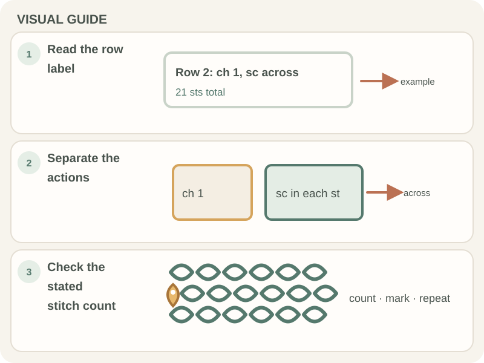

Patterns & Troubleshooting · Beginner guide
How to Read a Crochet Pattern Step by Step
Read a written crochet pattern from its materials and notes through the row instructions, checking abbreviations before you start.

A pattern’s key explains how its designer uses stitches, repeats, and turning chains. Do not assume every pattern treats these details the same way.
Before you begin
Keep the pattern, a marker or row counter, and the listed yarn and hook nearby. Read the notes and the first full row before crocheting.
Step-by-step instructions
- Read the materials, gauge, finished size, and special notes.
- Look up unfamiliar abbreviations in the pattern’s own key.
- Follow the row from left to right in the written order, pausing at punctuation and repeat marks.
- Mark completed rows and count stitches where the pattern gives a count.

How to check your work
After a row, compare your stitch count with the pattern and check that you completed each repeat the stated number of times.
Common beginner problems
- A repeat does not fit at the row end: Check how many times the pattern says to repeat and whether the final stitches fall outside the repeat.
- A comma or asterisk is confusing: Use the pattern’s notation key; symbols and phrasing can vary among designers.
- My count is different: Check the turning chain, skipped stitches, and repeat count before undoing the full row.
Reading repeat notation
In a hypothetical instruction such as “sc in next 3 sts,” work one US single crochet in each of the next three stitch tops. Asterisks, brackets, and parentheses may mark repeats or grouped work; consult that pattern’s key before interpreting them. The Craft Yarn Council abbreviation list is a reference, not a substitute for a designer’s notes.
Frequently asked questions
What does “rep” mean?
It commonly means repeat, but check how many times and where the pattern says to repeat.
Do I count the turning chain?
Follow the pattern’s row note; turning-chain rules vary.
What if an abbreviation is not listed?
Look in the pattern’s key or contact the publisher if a contact method is provided.